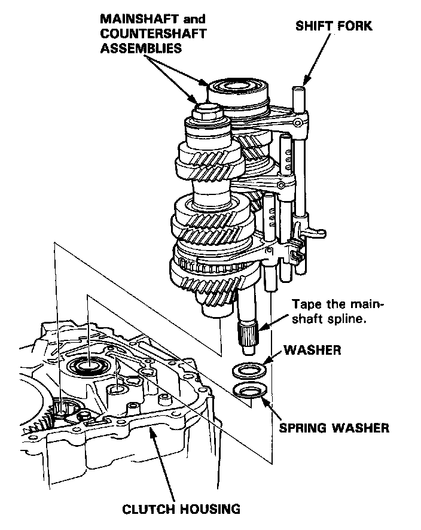
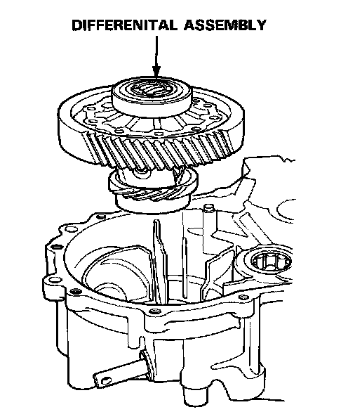
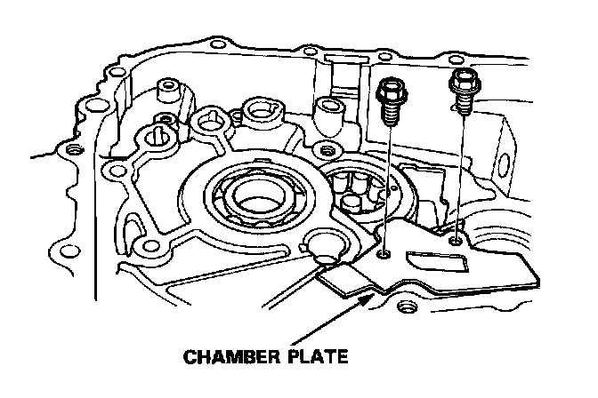

Removal
Mainshaft, Countershaft, Differential Assemblies Removal
1. Remove the mainshaft and countershaft assemblies with the shift fork from the clutch housing.
NOTE: Before removing the mainshaft and countershaft assemblies, tape the mainshaft spline to protect it.

2. Remove the differential assembly.

3. Remove the chamber plate.